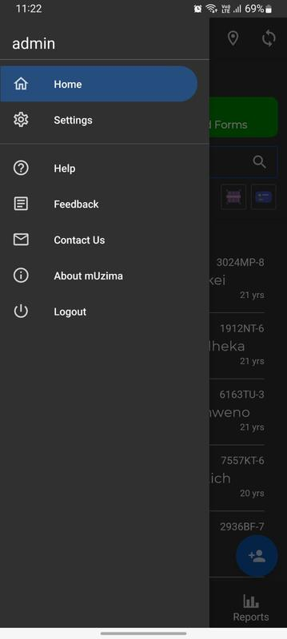
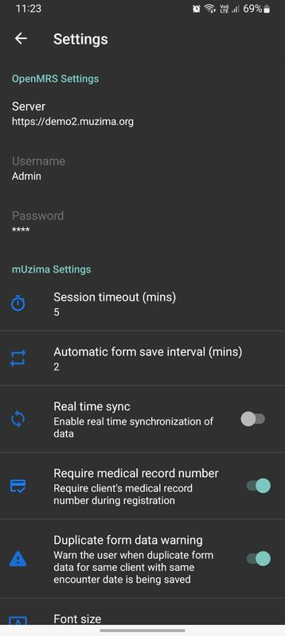
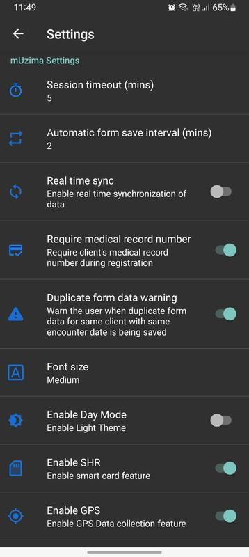
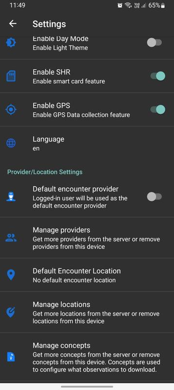

mUzima में सेटिंग
मुज़िमा प्रोग्राम सेटिंग्स को होम पेज के माध्यम से एक्सेस किया जा सकता है। ऊपरी दाएं कोने पर हैमबर्गर आइकन पर क्लिक करें।

OpenMRS सेटिंग
यह सेटिंग डेटा तक पहुंचने के लिए mUzima द्वारा उपयोग किए जाने वाले सर्वर के url को निर्दिष्ट करती है। एक मुज़िमा उपयोगकर्ता बदल सकता है
पता फ़ील्ड पर क्लिक करके यह पता। उपयोगकर्ता नाम और पासवर्ड केवल सर्वर पर बदले जाते हैं।

मुज़िमा सेटिंग
ये एप्लिकेशन स्तर सेटिंग हैं।

- यदि कार्यक्रम उपयोग में नहीं है तो सत्र का समय समाप्त हो गया है। यह रोगी जानकारी की सुरक्षा के लिए डिज़ाइन किए गए मुज़िमा का एक सुरक्षा पहलू है।
- स्वास्थ्य सेवा प्रदाता के हस्तक्षेप के बिना फ़ॉर्म को सहेजने के लिए स्वचालित फ़ॉर्म सेव इंटरवल (मिनट) का उपयोग किया जाता है।
- एक रीयल-टाइम सिंक जो आपको सर्वर पर भरे हुए फॉर्म को स्वचालित रूप से अपलोड करने की अनुमति देता है।
- आवश्यक मेडिकल रिकॉर्ड नंबर सक्षम होने पर मेडिकल रिकॉर्ड नंबर को आवश्यक बना देगा।
- डुप्लिकेट प्रपत्र डेटा चेतावनी यदि प्रपत्र एक से अधिक बार भरा गया है; डेटा सहेजते समय उपयोगकर्ता को सचेत करता है।
- फ़ॉन्ट आकार; उपयोगकर्ता छोटे, मध्यम और बड़े के बीच फ़ॉन्ट आकार चुन सकता है।
- डे मोड सक्षम करें का उपयोग डार्क मोड (डिफ़ॉल्ट) और लाइट मोड के बीच टॉगल करने के लिए किया जाता है
- सक्षम करें SHR मोबाइल एप्लिकेशन पर साझा स्वास्थ्य रिकॉर्ड (स्मार्ट कार्ड सुविधा) को सक्षम/अक्षम करेगा
- सक्षम करें GPS जानकारी के संग्रह के साथ-साथ भू-मानचित्रण सुविधा को सक्षम/अक्षम कर देगा
प्रदाता/स्थान सेटिंग
ये प्रदाता/स्थान स्तर की सेटिंग हैं

- डिफ़ॉल्ट एनकाउंटर प्रदाता : लॉग किया गया उपयोगकर्ता फॉर्म भरते समय रोगी के सेवा प्रदाता के रूप में स्वतः ही पहले से भर जाएगा।
- प्रबंधकों को प्रबंधित करें: सर्वर से अन्य सेवा प्रदाताओं को प्राप्त करने के लिए उपयोग किया जाता है या उन्हें mUzima ऐप से हटा दिया जाता है।
- डिफ़ॉल्ट मुठभेड़ स्थान : मुठभेड़ स्थान का उपयोग मुठभेड़ के दौरान एक डिफ़ॉल्ट मुठभेड़ स्थान के रूप में किया जाएगा और एक फॉर्म में पहले से भरा जाएगा।
- स्थान प्रबंधित करें: उपयोगकर्ता सर्वर से मुठभेड़ स्थान प्राप्त कर सकता है या मुज़िमा में एक मुठभेड़ स्थान हटा सकता है।
- अवधारणा प्रबंधित करें : इस सेटिंग का उपयोग सर्वर से अधिक अवधारणाएं प्राप्त करने या डिवाइस से अवधारणाओं को निकालने के लिए किया जाता है।